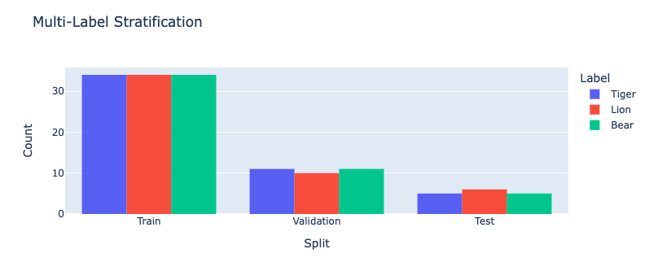
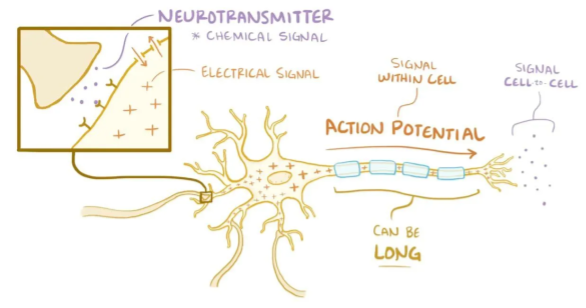

Deep Learning 101
Boiling down a neural network to its fundamental concepts.
Types of Analysis
If you are generally familiar with spreadsheets then you are already half way to understanding AI. For the purpose of this discussion, let's assume that each row in a spreadsheet represents a record, and each column provides information about that record. Bearing this in mind, there are two major types of AI:
Generative |
Given what we know about rows 1:1000 → generate row 1001. |
Discriminative |
Given what we know about columns A:F → determine the values of column G. |

Subtypes of Analysis
In this tutorial, we will focus on discriminative analysis as it is highly practical and easier to understand. This subtype of analysis helps us answer two important kinds of questions:
Categorize |
What is it? |
e.g. benign vs malignant? which species? landmine vs rock? |
Quantify |
How much? |
e.g. price? distance? weight? age? radioactivity? |

Digging one layer deeper, there are two types of categorization:
Binary |
Checking for the presence of a single condition |
e.g. tumor |
Multi-Label |
When there are many possible outcomes |
e.g. species |
Variables
As an example, let's pretend we work at a zoo where we have a spreadsheet that contains information about the traits of different animals 🐢 We want to use discriminative learning in order to categorize the species of a given animal.
Features |
Indepent Variable (X) |
Informative columns like num_legs, has_wings, has_shell. |
Label |
Dependent Variable (y) |
The species column that we want to predict. |

We learn about the features in order to predict the label.
Stratification
Our predictive algorithm will need samples to learn from as well as samples for evaluating its performance.
So we split our dataset into subsets for these purposes. It's important that the distribution of each subset is representatitive of the broader population because we want our algorithm to be able to generalize.
Train |
67% |
What the algorithm is trained on/ learns from. |
Validation |
21% |
What the model is evaluated against during training. |
Test |
12% |
Blind holdout for evaluating the model at the end of training. |
Encoding & Decoding
Before an algorithm can interact with the data, it needs to be encoded into numeric format.
Binarize |
Categorical |
1 means presence, 0 means absence. |
OneHotEncode(OHE) |
Categorical |
Expand a single multi-category col into many binary cols. |
Ordinal |
Categorical |
[Bad form] Each category is assigned an integer [0,1,2]. |
Scale |
Continuous |
Shrink the range of values between -1:1 or 0:1. |
Normalization also helps features start on equal footing and prevent gradient explosion.

After the algorithm makes its prediction, 📞 that information needs to be decoded back into its orginal format so that it can be understood by practitioners.
Algorithm
Now we need an equation (aka algorithm or model) that predicts our label when we show it a set of features. ✨ Here is our simplified example:
species = (num_legs * x) + (has_wings * y) + (has_shell * z)
This mock equation is actually identical to a neural network with neither hidden layers nor bias neurons.
The challenging part is that we need to figure out the right values (aka weights) for the parameters (x, y, z) so that our algorithm makes accurate predictions ⚖️ To do this by hand, we would simply use trial-and-error; change the value of x, and then see if that change either improved the model or made it worse.
Gradient Descent
Fortunately, computers can rapidly perform these repetetitive calculations on our behalf. This is where the magic of AI comes into play 🔮 It simply automates that trial-and-error.
{kind=link}
The figure above demonstrates what happens during a training batch: (1) the algorithm looks at a few rows, (2) makes predictions about those rows using its existing weights, (3) checks how accurate those predictions are, (4) adjusts its weights in an attempt to minimize future errors. It's like finding the bottom of a valley by rolling a ball down it.

With repetition, the model molds to the features like a memory foam mattress.
Architectures
There are different types of algorithms (aka neural network architectures) for working with different types of data:
Linear |
🧮 Tabular |
e.g. spreadsheets & tables. |
Convolutional |
📸 Positional |
e.g. images, videos, & networks. |
Recurrent |
⏱️ Ordered |
e.g. time, text, & DNA. |
They can be mixed and matched to handle almost any real-life scenario.
Networks
Graph theory is a mathematical discipline that represents connected objects as networks comprised of:
Nodes |
participants in the network |
e.g. lightbulbs |
Edges |
connect (aka link) the nodes together |
e.g. wires |

In a neural network, the 💡 nodes are neurons and the 🔌 edges are weights.
Topology
The structure of the neural network is referred to as the topology. The diagram below shows the topology of a linear architecture. Although it may seem overwhelming at first, the mechanisms of the individual components are actually quite simple. We'll start with the big picture and then deconstruct it to understand what each piece does.

Running with our network analogy - as data passes through each wire, it is multiplied by that wire's adjustable weight that we mentioned previously. In this way, the weights act like amplifiers that adjust the voltage passing through the network. Meanwhile, the neurons are like lightbulbs with degrees of brilliance based on the strength of the voltage they receive from all of their incoming wires. The bias neurons don't actually touch the data. They act like a y-intercept (think b in y = mx + b).
If things still aren't making sense, try thinking of a neural network as a galtonboard (aka "bean machine"). The goal is to shape the topology of the network so that it can successfully tease apart the patterns in the data to make the right predictions.
Layers
Within a neural network, there are different types of layers:
Input |
Receives the data. Mirrors the shape of incoming data. |
Hidden |
Learns from the patterns in data. # of layers & neurons varies based on data complexity. |
Output |
Compares the data to the real label. Mirrors the shape of the labels (# of categories). |
Regulatory |
[Not pictured here] Dropout, BatchNorm, MaxPool help keep the network balanced. |
Coming back to our zoo example, the number of input neurons in our input layer would be equal to the number of features, and the number of output neurons in our output layer would be equal to the number of possible species.
The number of hidden layers and the amount of hidden neurons in those layers will vary based on the complexity of the problem we are trying to solve 🦏 Classifying rhinos vs mosquitoes based on their weight is such a simple task that it would not require any hidden layers at all 🐆 However, delineating the subtle differences between types of big cats (lynx, ocelot, tiger, cougar, panther) may require several layers in order to tease apart their differences. For example, the first hidden layer might check for spotted vs striped fur, while the second hidden layer determines the color of that marking.
Biological Neurons
How does a neuron in the brain process information?
In the brain, networks of neurons work together to respond to an incoming stimulus 🧠 They repeatedly pass information to downstream neurons in the form of neurotransmitters.
However, neurons only forward information if certain conditions are met. As the neuron receives incoming signals, it builds up an electrically charged chemical concentration (aka action potential) inside its cell membrane ⚡ When this concentration exceeds a certain threshold, it fires a spike.

The Hodgkin-Huxley duo discovered these phenomena by observing the rate at which neurons in giant squids fired spikes based on variations in current 🦑 Trappenburg, Fundamentals of Computational Neuroscience. 2nd edition, 2010
Artificial Neurons
How does an artificial neuron process information?
Similar to how a biological neuron aggregates an action potential based on input from preceding neurons ➕ an artificial neuron aggregates a weighted sum by adding up all of the values of its incoming weights.

How then is the spiking threshold for artificial neurons determined? Any way we program it! The weighted sum can be ran through any activation function of our choosing.
Different layers make use of different activation functions:
Input |
In a linear network, the receiving layer does not have an activation function. |
Hidden |
The de facto activation function is ReLU. Rarely, Tanh. |
Output |
Sigmoid for binary classification. Softmax for multi-label classification. None for regression. |
Performance Metrics
How does the algorithm know if its predictions are accurate? As mentioned in the sections above, it calculates the difference between its predicted label and the actual label. There are different strategies for calculating this loss:
BinaryCrossentropy |
Binary classification. |
CategoricalCrossentropy |
Multi-label classification. |
MeanSquaredError or MeanAbsoluteError. |
Used for regression. |
Although neural networks are great at minimizing loss, this metric is hard for humans to understand 📉 The following two metrics are easy to understand because they both max out at 1.0 aka 100%:
Accuracy |
Classification. |
R² |
Regression. |
A learning curve keeps track of these metrics over the course of model training:

Have a look at the other visualizations & metrics provided by AIQC.
Tuning
A data scientist oversees the training of an neural network much like a chef prepares a meal 🔥🎛️ The heat is what actually cooks the food, but there are still a few things that the chef controls:
Duration |
Food isn’t fully cooked? Train for more epochs or decrease the size of each batch. |
Parameters |
Burning? Turn down learning rate. Tastes bad? Change initialization & activation spices. |
Topology |
If the food doesn’t fit in the pan, switch to a larger pan with deeper/ taller layers. |
Regulation |
Overfitting on the same old recipes? Add more Dropout to mix things up. |

At first, the number of tuning options seems overwhelming, but you quickly realize that you only need to learn a handful of common dinner recipes in order to get by.
Let's Get Started
It's really that simple. The rest is just figuring out how to feed your data into and out of the algorithms, which is where AIQC comes into play.